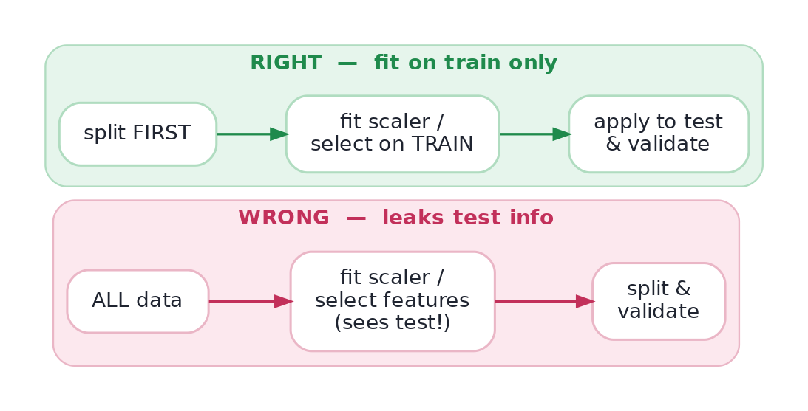

Feature Selection
Fewer, better features: filter, wrapper, embedded.
This lesson covers the technique that removes features (selection) and the bug that silently invents performance (leakage). Leakage is the single most dangerous mistake in applied machine learning: it makes your model look brilliant in validation and then fail in production, and it has sunk real projects, papers, and Kaggle careers. If you learn one thing defensively in this whole track, learn to smell leakage.
Why less can be moreFeature selection: fewer, better features
More features isn't always better. Irrelevant ones add noise the model can overfit to, slow training, and hurt interpretability — the curse of dimensionality. Three families of selection:
- Filter — score each feature against the target independently (correlation, mutual information, a chi-square test) and keep the top ones. Fast, model-agnostic.
- Wrapper — let a model choose, adding/removing features and measuring effect (e.g. recursive feature elimination). Powerful but slow.
- Embedded — the model selects while training: L1 (Lasso) regularization drives useless coefficients to exactly zero; tree importances rank features. Often the best value-for-effort.
The deadliest bugData leakage: when your model sees the future
Leakage is when information that wouldn't be available at prediction time sneaks into training. Two flavours dominate:
- Train–test contamination: fitting any learned transform (scaler, imputer, encoder, feature selector) on the whole dataset before splitting — so the test set leaks into the features. The fix is the picture below.
- Target leakage: a feature that is really a proxy for the label or uses future information — e.g.
account_closed_datewhen predicting churn, ortotal_paid_this_yearwhen predicting whether they'll pay. It looks amazing and is a mirage.

The demo that scares peopleWatch leakage manufacture accuracy from pure noise
Here's the demonstration that makes leakage unforgettable. We generate completely random features and random labels — there is no signal, so honest accuracy must be ~50%. Then we select the "best" 20 features using the whole dataset before cross-validating. Watch the accuracy lie:
import numpy as np
from sklearn.feature_selection import SelectKBest, f_classif
from sklearn.linear_model import LogisticRegression
from sklearn.model_selection import cross_val_score
from sklearn.pipeline import Pipeline
rng = np.random.default_rng(0)
X = rng.normal(size=(200, 5000)) # 5000 PURE-NOISE features
y = rng.integers(0, 2, size=200) # RANDOM labels -> no real signal
# WRONG: pick the 20 "best" features using ALL rows, THEN cross-validate
Xsel = SelectKBest(f_classif, k=20).fit_transform(X, y)
leaky = cross_val_score(LogisticRegression(max_iter=1000), Xsel, y, cv=5).mean()
# RIGHT: selection happens INSIDE each CV fold (train-only), via a Pipeline
pipe = Pipeline([("sel", SelectKBest(f_classif, k=20)),
("clf", LogisticRegression(max_iter=1000))])
honest = cross_val_score(pipe, X, y, cv=5).mean()
print(f"LEAKY accuracy (select before CV): {leaky:.0%} <- on PURE NOISE!")
print(f"HONEST accuracy (select inside CV): {honest:.0%} <- ~chance, the truth")LEAKY accuracy (select before CV): 80% <- on PURE NOISE! HONEST accuracy (select inside CV): 51% <- ~chance, the truth
Read that again: ~70% accuracy on data with no signal whatsoever. The feature selector, by peeking at the labels of all rows (including the CV test folds) when choosing features, handed the model a cheat sheet. The honest pipeline — selecting inside each fold on train data only — correctly reports chance. If your validation score seems too good to be true, suspect leakage first.
Interactive labYour turn — scale test data the leakage-free way
The rule: standardize the test set using the training set's mean and std — never statistics recomputed on test. Compute mu and sd from train, standardize test with them, and assign the mean of the standardized test values (rounded to 2 decimals) to answer.
train and test arrays preloaded. First Run boots Python.mu, sd = train.mean(), train.std() (train only!), then (test - mu)/sd, take .mean(), round to 2 dp. Do NOT use test.mean()/test.std().mu, sd = train.mean(), train.std()
answer = round(float(((test - mu) / sd).mean()), 2)The standardized test mean isn't 0 — and that's correct! Only the training set is centered to mean 0; the test set is transformed with the same train parameters, so its mean reflects how test differs from train. Recomputing stats on test would be leakage.
★ Key points to remember
- Feature selection (filter / wrapper / embedded) trims noise features — L1 and tree importances are the best value-for-effort.
- Leakage = information at train time that won't exist at prediction time; it inflates validation and collapses in production.
- Train–test contamination: fit scalers/imputers/encoders/selectors on train only, then apply to test — split first.
- Target leakage: a feature that's a proxy for the label or uses the future (e.g.
closed_datefor churn) — drop it. - Selecting features on the whole dataset can score ~70% on pure noise — if a result looks too good, suspect leakage first.
account_cancellation_date — it only exists because the user churned, so it's a proxy for the labeltenure_months — how long they've been a customermonthly_plan_pricenum_support_tickets◆ Practice▸
Show solution & reasoning
(1) Audit each feature for the future: is any value known only after the prediction point, or populated only when the outcome occurs (dates, totals, post-event flags)? Drop them. (2) Check the pipeline boundary: are all learned transforms (scaler, imputer, encoder, selector, TF-IDF) fit inside the CV/train fold, not on the full dataset? (3) Respect time: for temporal data, split by time (train on past, test on future), never randomly — and make sure no feature aggregates across the split. (4) Sanity-check the score: near-perfect accuracy on a hard problem is a leakage alarm, not a triumph. (5) Look for ID/duplicate leakage: the same entity in both train and test, or a row-order/index artifact correlated with the label. Running this list turns 'too good to be true' into 'find the leak.'
number_of_late_payments a leakage risk, and how do you fix it?Show solution & reasoning
It depends on when those late payments are counted. If the field tallies late payments over the whole life of the loan (including after application, as the borrower heads toward default), it encodes the future outcome — a borrower defaults because they missed payments, so the feature is a proxy for the label and will leak. Fix: restrict every feature to information available strictly at or before the application/decision point — e.g. late payments on prior loans up to application date only. Enforce this with a time-aware split and per-feature 'as-of' timestamps so nothing aggregates across the prediction moment. The principle: a feature is only legitimate if it would genuinely be known at the instant you make the prediction.
◎ Deep dive: temporal leakage, time-aware splits, and Pipelines as leakage insurance▸
Temporal leakage is the sneakiest kind. With any time-ordered data (transactions, sensor readings, user events), a random train/test split lets the model train on the future to predict the past — a luxury it will never have in production. You must split by time (train on earlier periods, validate on later ones), and ensure no feature secretly aggregates across that boundary (a 'total spend' or rolling mean that peeks forward). Even a global StandardScaler fit on all time periods leaks the future's distribution. Time-series cross-validation (expanding or rolling windows) exists precisely to make evaluation honest here.
Why the Pipeline is a correctness tool, not a convenience. Wrapping every learned step (imputer → scaler → encoder → selector → model) in a scikit-learn Pipeline means that when you call cross_val_score or GridSearchCV, each fold refits the entire chain on that fold's training data only — making train–test contamination structurally impossible. Doing the steps by hand, it's fatally easy to fit a scaler or selector once on all the data and forget. So the Pipeline isn't just tidy code; it's the mechanism that enforces the fit-on-train-only rule across your whole feature-engineering stack. This is why 'always use a Pipeline' is the standard senior advice — it turns a discipline you might forget into a guarantee the library keeps for you.